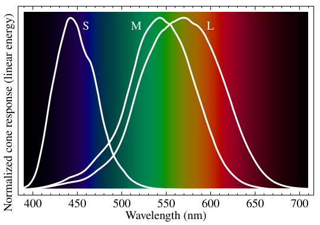

czyli sztuka kompromisu sztuki
Mateusz Bartnik
Według standardu CSS,
The CSS hex color notation allows an sRGB color to be specified by giving the components as hexadecimal numbers [...]
Ale co znaczy "kolor sRGB"?
Ludzkie oko zawiera trzy rodzaje czopków (komórek wykrywających kolory).

Jako, że ilość światła nie jest wprost proporcjonalna do wartości komponentu, robienie matematyki na ilościach światła powoduje... średnie rezultaty.
(ciągle nieidealne odwzorowanie jasności, gradient hue w HSL (?)) (to pozwoli również na wspomnienie o polarnych formach) (also: w gradiencie liniowym sRGB jest niezbalansowana barwa)
(oklab, gradient hue w Oklch)